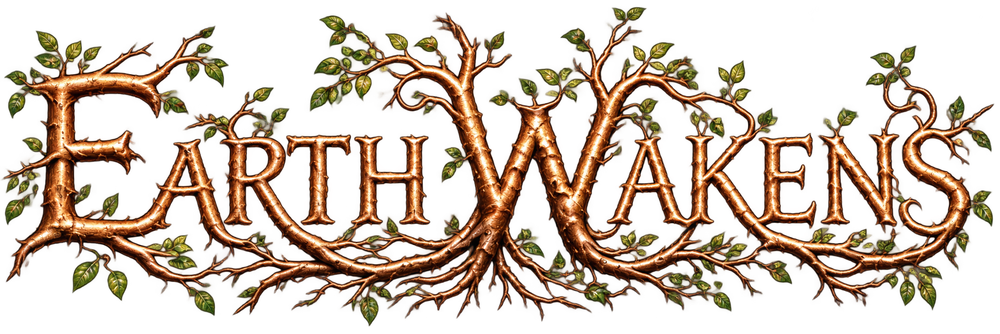

Earth Wakens · The card game
Earth Wakens — The Card Game
A Journey of Self-Awareness
Earth Wakens invites you to follow The Earth Spirit from its first exploratory reaches toward its experience of The Spiritual Realm. Bring your imagination, your questions, and your own understanding of existence.
What might The Living World discover through becoming aware of itself? The story and the game offer room to explore that question and find a personal connection to what you discover.
Confirmed opposing pairs
| Spiritual Realm | Stop |
|---|---|
| Love | Hate |
| Existence | Death |
The cards have working names. These placeholders may change as the deck develops.
The game is in development.
Begin the story →A glimpse of the cards

PO
I
S
O
N


Collectible cards
Explore the artwork of Earth Wakens through its collectible cards.
Playing Deck
11 illustrated cards · 50 ideas awaiting artwork
Spiritual Realm (4 of 20 illustrated)

Paranormal 
Realm  Imagination
Imagination- Future
- LoveArtwork pending
- ExistenceArtwork pending
- BeautyArtwork pending
- PassionArtwork pending
- LaughterArtwork pending
- HopeArtwork pending
- CompassionArtwork pending
- WonderArtwork pending
- HarmonyArtwork pending
- BabyArtwork pending
- RebirthArtwork pending
- KindnessArtwork pending
- MeditationArtwork pending
- Self-awarenessArtwork pending
- FamilyArtwork pending
- AncestryArtwork pending
Earth Spirit (4 of 17 illustrated)
 Grasping
Grasping Conscious Earth
Conscious Earth Emergence
EmergenceThe power of the Earth moves mountains and shapes the world. Play this card to gain a powerful advantage, overcome an obstacle, or counter a Stop card. “From rock to wind, from soil to sky, the Earth has the power to transform.”
Power- ArtArtwork pending
- MusicArtwork pending
- ChemistryArtwork pending
- SportsArtwork pending
- ComedyArtwork pending
- DanceArtwork pending
- StorytellingArtwork pending
- InventionArtwork pending
- ExplorationArtwork pending
- CraftsmanshipArtwork pending
- PoetryArtwork pending
- Science and AstronomyArtwork pending
- NatureArtwork pending
Stop Cards (3 of 18 illustrated)
- Dread

Dread temporarily prevents you from advancing toward the Spiritual Realm. To overcome Dread, you must play a Self-Awareness, Courage, or Understanding card. “Dread became the shadow of its awakening.”
Read card copy
Dread temporarily prevents you from advancing toward the Spiritual Realm. To overcome Dread, you must play a Self-Awareness, Courage, or Understanding card. “Dread became the shadow of its awakening.”

Gambling 
Addiction (formerly Poison) - PollutionArtwork pending
- LitteringArtwork pending
- GreedArtwork pending
- LustArtwork pending
- PerversionArtwork pending
- HateArtwork pending
- DiseaseArtwork pending
- FearArtwork pending
- IgnoranceArtwork pending
- IsolationArtwork pending
- DespairArtwork pending
- CrueltyArtwork pending
- DestructionArtwork pending
- JealousyArtwork pending
- DecayArtwork pending
Unassigned ideas (0 of 6 illustrated)
- RageArtwork pending
- VengeanceArtwork pending
- RevengeArtwork pending
- EmotionsArtwork pending
- WealthArtwork pending
- MessiahArtwork pending
Card Back